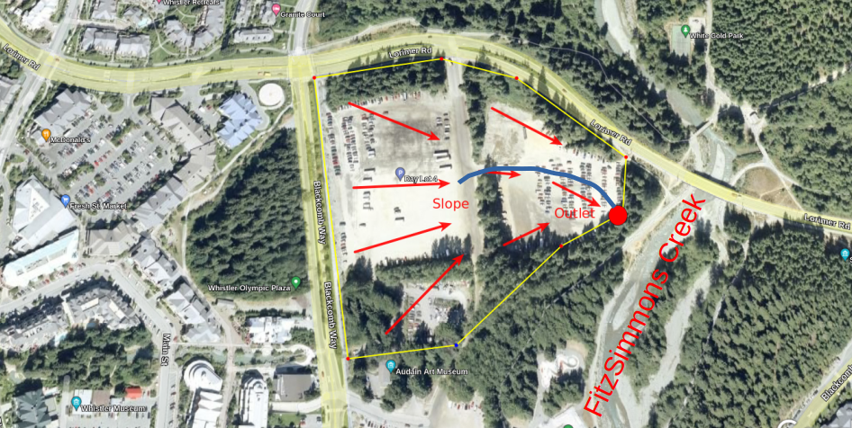
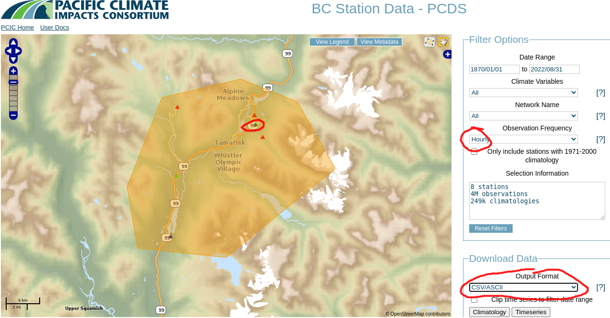
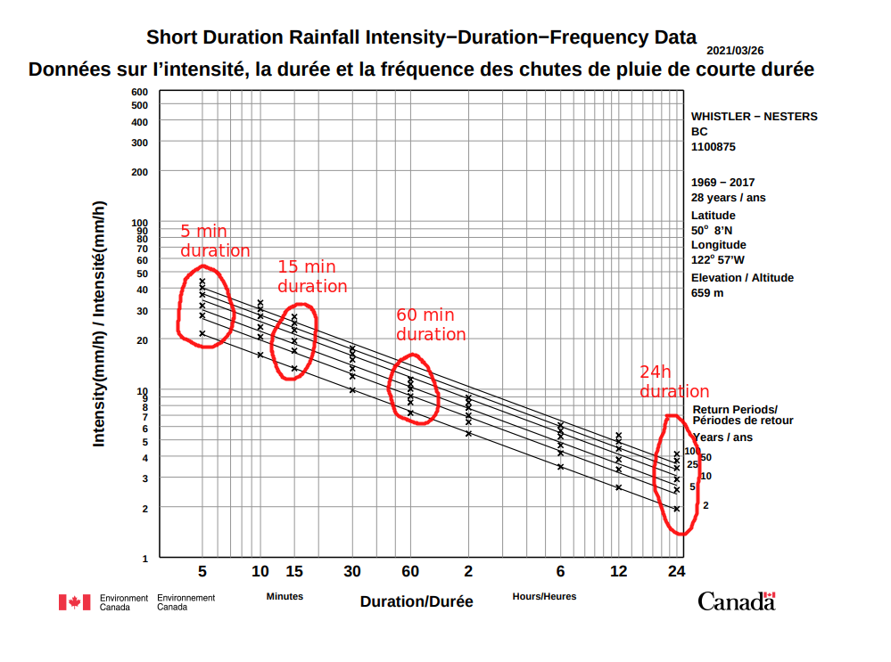

Notebook 4: Event-Based Rainfall-Runoff Modelling
Contents
Notebook 4: Event-Based Rainfall-Runoff Modelling#
Hydrograph development from lumped & distributed models#
Introduction#
In this notebook, we look at two ways of estimating a rainfall-runoff response hydrograph from precipitation data.
First, we’ll use the rational method to approximate peak flow in response to a precipitation event, and we’ll relate it to a water level at an example basin outlet. We’ll then use an open-source geospatial library to make a simple distributed model of the basin from digital elevation data (DEM). We’ll calculate the flow direction and flow accumulation in order to delineate a basin and define the stream network, and use this to construct an hydrograph from a precipitation event.
Here we will
# import required packages
import pandas as pd
import numpy as np
import math
# advanced statistics library
from scipy import stats
import matplotlib.pyplot as plt
import matplotlib.patches as mp
import matplotlib.colors as colors
# SEE COMMENTS ABOUT PYSHEDS LIBRARY IN NEXT CELL
from pysheds.grid import Grid
from bokeh.plotting import figure, show
from bokeh.io import output_notebook
from bokeh.models import LinearColorMapper, LogTicker, ColorBar, BasicTickFormatter, VBar, ColumnDataSource
from bokeh.io import output_notebook
output_notebook()
---------------------------------------------------------------------------
ModuleNotFoundError Traceback (most recent call last)
Input In [1], in <cell line: 2>()
1 # import required packages
----> 2 import pandas as pd
3 import numpy as np
4 import math
ModuleNotFoundError: No module named 'pandas'
Problem Setup#
Let’s imagine you had a summer job in Whistler working on a project to grade and re-pave the area around Day Lot 4, including installing drainage to capture water from the parking lot and divert it to a storm water collection system instead of draining into FitzSimmons Creek.

It’s summer and the project is scheduled to be completed by fall. For the sake of this exercise, assume the slope of the parking lot area describes a catchment of roughly 1 \(km^2\) and empties through a temporary channel into a catch basin to be treated before flowing into FitzSimmons Creek. Unfortunately, beyond the outlet (red dot in the diagram above), the channel has to cross the pedestrian trail that follows the river left bank. Assume the channel is rectangular in shape, and is 2m wide by 0.25m deep with a hydraulic grade slope of 0.5%. Assume that sheet flow occurs for 100m in any part of the basin, beyond which channelized flow forms, so we have two times to calculate, \(t_{sheet}\) and \(t_{channel}\):
Channel width (w): \(2m\)
Channel Depth (h): \(0.25m\)
Hydraulic Grade Line Slope (S): 0.005 (0.5%)
Roughness (n): 0.017 (rough asphalt)
Note: Given the drainage area is only \(1 km^2\), do you have a sense of what duration of rainfall is appropriate for estimating the peak of the runoff response hydrograph? i.e. 1h, 6h, 24h, 48h?
Import Precipitation Data#
We can use the application from the Pacific Climate Impacts Consortium (PCIS) to retrieve climate observations in the Whistler area. For this exercise, we will use historical climate data from the Meteorological Service of Canada (MSC) station at Whistler, BC. Using the Observation Frequency filter provided, there appear to be a few climate stations with hourly precipitation data:

We’ll look at one (ID 1048899: Whistler (2014-2022)) as an example. Well, no we won’t because it turns out this station does not actually have hourly data, nor do any of the others except one (925 - green triangle circled in red). You will always be responsible for your own data validation. In the PCIS database has hourly data available at only one location in the Whistler area, and it’s from the Ministry of Forests, Lands, and Resource Operations Wildfire Management Branch (FLNRO-WMB) for a brief period in 2005 (ID 925 ZZ REMSATWX1).
# import precipitation data
# note that the ascii file uses the string 'None' for NaN
# and we need to fix this.
df = pd.read_csv('../../notebook_data/notebook_4_data/925.ascii',
header=1, na_values=[' None'], infer_datetime_format=True, parse_dates=[' time'])
# note that the ascii format imports the column headers with spaces
# that need to be cleaned up
df.columns = [e.strip() for e in df.columns]
df.set_index('time', inplace=True, drop=True)
Plot the Data#
Here we will use the Bokeh data visualization library to plot the precipitation data. The ability to zoom in and out of different time scales provides a different perspective and helps with data exploration and review. We don’t have much data in this case, but if we did, holy crow, look out.
datasource = ColumnDataSource(df)
p = figure(title=f'Hourly Precipitation {df.index[0]:%Y-%m-%d} -{df.index[-1]:%Y-%m-%d}', width=750, height=300, x_axis_type='datetime')
p.vbar(x='time', width=pd.Timedelta(hours=1), top='precipitation',
bottom=0, source=datasource, legend_label='Precipitation',
color='royalblue')
p.legend.location = 'top_left'
p.xaxis.axis_label = 'Date'
p.yaxis.axis_label = 'Precipitation [mm]'
p.toolbar_location='above'
show(p)
Estimating Peak Runoff#
It is rare to find long-term records at a high frequency of measurement, so we do the best we can with the information available. Below, we’ll look at a few ways of constructing a hydrograph. We want to construct a hydrograph because if we can accurately predict its peak (or more generally its shape), we can design hydraulic structures and other water management systems. We’ll start with a very basic estimate that has minimal information requirements, and move to more complex and information-intensive methods.
In the problem setup we asked “will the outlet channel be big enough”. Water resources problems are often expressed in terms of risk, and typically for this kind of analysis we communicate risk in terms of annual exceedance probability (AEP). In other words, what is the probability that the flow in the channel will exceed its capacity in a given year? These kinds of problems do not have a right answer, they are open-ended and subjective—meaning there is always some judgment that needs to be applied. The topic of risk will be discussed further in Notebook 5. For now, we want to focus on a few ways of estimating (the peak of) a runoff hydrograph from precipitation data.
Rational Method#
Recall that the peak runoff for a small basin can be estimated by the following from the US Army Corps of Engineers (USACE):
Where:
k: 0.278 [-]
C: runoff coefficient [-]
I: rainfall intensity [mm/hr]
a: drainage area [\(km^2\)]
We have already estimated drainage area, and there are just two additional pieces of information we need to estimate the peak runoff for our basin. The runoff coefficient “C” can be found in a table of empirical values in the USACE link above, and the rainfall intensity can be estimated from Intensity-Duration-Frequency curve data developed by Environment Canada. More information on IDF Curve usage. We can find IDF curves for specific locations using the web application at climatedata.ca. The IDF curve for Whistler is below:

We don’t really know the appropriate duration yet for our basin, but we can select a few and run calculations to see how sensitive this model is to the duration. The five diagonal lines represent different return periods (2, 5, 10, 20, 50, 100). The return period is the inverse of the AEP, and again it represents the probability of occurrence in any given year, and it does not suggest an event of any magnitude will occur once in that return period.
Below we’ll use a range of the values that we’re not too sure about their effect on the estimated hydrograph (peak flow).
def rational_method_peak_flow(C, I, a):
"""Calculate peak flow (m^3/s) using the rational method.
Args:
C (float): runoff coefficient
I (float): rainfall intensity [mm/hr]
a (float): drainage area [km^2]
"""
return 0.278 * C * I * a
# here we'll define an array of three runoff coefficient values
# to get a sense of the range of possible conditions
# minimum, maximum, and expected value
C_values = [0.5, 0.9, 0.7]
# for each return period, we'll read the minimum and maximum intensity
# and use these to see the range of outcomes
IDF_dict = {
5: (22, 45), # the 2 and 100 year intensities are 22mm, 45mm (5 min)
15: (14, 28),
60: (7, 15),
1440: (2, 4) # 1440 minutes is 24 hours
}
# calculate the range of flow estimates for each C and each return period
# and create a plot for each runoff coefficient
figs = []
rational_results = {}
colors=['green', 'yellow', 'red']
for c in C_values:
i = 0
p = figure(title=f'Rational Method C={c}', width=600, height=400)
for k, (i_min, i_max) in IDF_dict.items():
Q_min = rational_method_peak_flow(c, i_min, 1)
Q_max = rational_method_peak_flow(c, i_max, 1)
x = [i_min, i_max]
y = [Q_min, Q_max]
p.line(x, y, legend_label=f'{k}min', color=colors[i])
p.yaxis.axis_label = 'Flow [m^3/s]'
p.xaxis.axis_label = 'Return Period'
i += 1
figs.append(p)
from bokeh.layouts import gridplot
layout = gridplot(figs, ncols=2, width=250)
show(layout)
SCS Unit Hydrograph Model#
Using the Soil Conservation Service unit hydrograph model, estimate the time of concentration, or the time it takes a drop of rain to flow from any point in the basin to the outlet assuming the area is a plane surface with homogeneous slope and roughness:
Where:
Is this a reasonable assumption in general? Consider what effect this assumption has on the resulting peak flow.
Lets reconstruct a runoff hydrograph at the outlet given the above information. First, we import some precipitation data from Whistler.
N = 0.0011
S = 0.005
L = 100
t_sheet = 0
Rainfall-Runoff Response by the Rational Method#
Below, we find a single precipitation event to use as an example for estimating a runoff hydrograph. Below we plot a two week period where
Convert Volume to volmeteric flow units#
Runoff is typically measured in \(\frac{m^3}{s}\), so convert \(\frac{mm}{day}\) precipitation to \(\frac{m^3}{s}\) runoff.
# convert to runoff volume
drainage_area = 1 # km^2
# runoff is typically measured in m^3/s (cms for short -- cubic metres per second),
# so express the runoff in cms
event_df['runoff_cms'] = event_df['Total Rain (mm)'] / 86.4
If the channel outlet has a rectangular shape of width 2m, how tall should our boots be? Assume a 0.5% slope, and find a reasonable assumption for the roughness of asphalt.
Recall the Manning equation:
Where:
n is the manning roughness
A is cross sectional area of the flow
R hydraulic radius (area / wetted perimeter)
S is the channel slope
# specify our given information
w_channel = 2 # m
S = 0.005 # channel slope
n_factor = 0.017 # rough asphalt
def calc_Q(d, w, S, n):
"""
Calculate flow from the Manning equation.
"""
A = d * w # flow area as (depth x width)
wp = w + 2 * d # wetted perimeter
R = A / wp # hydraulic radius (area / wetted perimeter)
return (1/n) * A * R**(2/3) * S**(1/2)
def solve_depth(w, n_factor, Q, S):
"""
Given a flow, a roughness factor, a channel slope, and a channel width,
calculate flow depth.
"""
e = 1 / 100 # solve within 1%
d = 0
Q_est = 0
n = 0
while (abs(Q_est - Q) > e) & (n < 1000):
Q_est = calc_Q(d, w, S, n_factor)
# print(Q, Q_est, abs(Q_est - Q))
d += 0.001
n += 1
# print('solved in {} iterations'.format(n))
return d
# For each timestep, we want to solve for the depth of water at our outlet
event_df['flow_depth_m'] = event_df['runoff_cms'].apply(lambda x: solve_depth(w_channel, n_factor, x, S))
plt.plot(event_df.index, event_df['flow_depth_m'])
plt.ylabel('Flow depth [m]')
Not only are our feet wet, but if we happen to be there the peak it’s potentially dangerous. As little as 10-15cm of water quickly enough can sweep you off your feet.

More Complex Implementation: Spatial Data#
As discussed in class, precipitation takes time to travel from where it fell to the basin outlet. Next we will estimate the runoff response in a real catchment, just upstream from the parking lot example in the FitzSimmons Creek basin.
Step 1: Instantiate a grid from a DEM raster#
Some sample data is already included, but for extra data, see the USGS hydrosheds project.
# grid = Grid.from_raster('data/n45w125_con_grid/n45w125_con/n45w125_con', data_name='dem')
grid = Grid.from_ascii(path='../../data/notebook_5_data/n49w1235_con_grid.asc',
data_name='dem')
# reset the nodata from -32768 so it doesn't throw off the
# DEM plot
grid.nodata = 0
# store the extents of the map
map_extents = grid.extent
min_x, max_x, min_y, max_y = map_extents
Plot the DEM#
NOTE: The cell below may take up to 30 seconds to load. Please be patient, it is thinking really hard.
The code below will plot the Digital Elevation Model (DEM).
Do you recognize any features of the terrain? Can you locate where it is?
Hover over the map (or touch if using a touchscreen) to see the coordinates in decimal degree units.
What does the precision of the coordinates represent?
i.e. what does 5 decimal places in decimal degrees equate to in kilometers?
You can interact with the plot by using the tools on the left (in vertical order from top to bottom):
pan: move around the map
box zoom: draw a square to zoom in on
wheel zoom: use the mousewheel (or pinch gesture on a touchscreen) to zoom in
box zoom: draw a square to zoom in on
tap: not yet implemented (but you can see the coordinates)
refresh: reset the map
hover: see the coordinates when hovering over the map with a mouse or pointer
# set bokeh plot tools
tools = "pan,wheel_zoom,box_zoom,reset,tap"
# show the precision of the decimal coordinates
# in the plot to 5 decimal places
TOOLTIPS = [
("(x,y)", "($x{1.11111}, $y{1.11111})"),
]
# create a figure, setting the x and y ranges to the appropriate data bounds
p1 = figure(title="DEM of the Lower Mainland of BC. Hover to get coordintes.", plot_width=600, plot_height=int(400),
x_range = map_extents[:2], y_range = map_extents[2:],
tools=tools, tooltips=TOOLTIPS)
# map elevation to a colour spectrum
color_mapper = LinearColorMapper(palette="Magma256", low=-200, high=2400)
# np.flipud flips the image data on a vertical axis
adjusted_img = [np.flipud(grid.dem)]
p1.image(image=adjusted_img,
x=[min_x], # lower left x coord
y=[min_y], # lower left y coord
dw=[max_x-min_x], # *data space* width of image
dh=[max_y-min_y], # *data space* height of image
color_mapper=color_mapper
)
color_bar = ColorBar(color_mapper=color_mapper, #ticker=Ticker(),
label_standoff=12, border_line_color=None, location=(0,0))
p1.add_layout(color_bar, 'right')
show(p1)
# -123.15512, 49.41293
#-123.14657, 49.41080
-123.14350, 49.40251
Resolve flats in DEM#
grid.resolve_flats('dem', out_name='inflated_dem')
Specify flow direction values#
# N NE E SE S SW W NW
dirmap = (64, 128, 1, 2, 4, 8, 16, 32)
grid.flowdir(data='inflated_dem', out_name='dir', dirmap=dirmap)
fig = plt.figure(figsize=(8,6))
fig.patch.set_alpha(0)
plt.imshow(grid.dir, extent=grid.extent, cmap='viridis', zorder=2)
boundaries = ([0] + sorted(list(dirmap)))
plt.colorbar(boundaries= boundaries,
values=sorted(dirmap))
plt.xlabel('Longitude')
plt.ylabel('Latitude')
plt.title('Flow direction grid')
plt.grid(zorder=-1)
plt.tight_layout()
# plt.savefig('data/img/flow_direction.png', bbox_inches='tight')
# view the values of the raster as an array
grid.dir
# check the size of the raster
grid.dir.size
Delineate a Catchment#
Note that once you’ve executed the code in the cells below, if you change the Point of Concentration (POC), you’ll need to go back to Step 1 and execute the code from there again.
This needs to be done to re-initialize the extents of the data that are loaded into memory. The intermediary steps trim the extent of the DEM and you will get an error message saying:
ValueError: Pour point (-123.94307, 49.40783) is out of bounds for dataset with bbox (-123.195000000122, 49.39999999984, -123.15333333347199, 49.421666666498).
# Specify the Point of Concentration (POC) / Catchment Outlet (a.k.a. pour point)
# This location is a tributary of the Capilano River, just above the reservoir above
# Cleveland Dam.
x, y = -123.14657, 49.41080
x, y = -123.14350, 49.40251
# And just for good measure, here's the little tributary in the south-west corner.
# Note the instructions above about reloading the original data to re-initialize
# the DEM
x, y = -123.15512, 49.41293
# Delineate the catchment
grid.clip_to('dem')
grid.catchment(data='dir', x=x, y=y, dirmap=dirmap, out_name='catch',
recursionlimit=15000, xytype='label', nodata_out=0)
# Clip the bounding box to the catchment we've chosen
grid.clip_to('catch', pad=(1,1,1,1))
# Create a view of the catchment
catch = grid.view('catch', nodata=np.nan)
# check the shape to see if we've estimated close enough to the
# actual river to delineate the catchment successfully
print(catch.shape)
# if we get dimensions of < 10, we've missed and instead pointed at some
# little hillslope
print(grid.extent)
ext_1 = grid.extent
# Plot the catchment
fig, ax = plt.subplots(figsize=(8,6))
fig.patch.set_alpha(0)
plt.grid('on', zorder=0)
im = ax.imshow(catch, extent=grid.extent, zorder=1, cmap='viridis')
plt.colorbar(im, ax=ax, boundaries=boundaries, values=sorted(dirmap), label='Flow Direction')
plt.xlabel('Longitude')
plt.ylabel('Latitude')
plt.title('Delineated Catchment')
# plt.savefig('data/img/catchment.png', bbox_inches='tight')
Get flow accumulation#
grid.accumulation(data='catch', dirmap=dirmap, out_name='acc')
fig, ax = plt.subplots(figsize=(8,6))
fig.patch.set_alpha(0)
plt.grid('on', zorder=0)
acc_img = np.where(grid.mask, grid.acc + 1, np.nan)
im = ax.imshow(acc_img, extent=grid.extent, zorder=2,
cmap='cubehelix',
norm=colors.LogNorm(1, grid.acc.max()))
plt.colorbar(im, ax=ax, label='Upstream Cells')
plt.title('Flow Accumulation')
plt.xlabel('Longitude')
plt.ylabel('Latitude')
# plt.savefig('data/img/flow_accumulation.png', bbox_inches='tight')
Calculate distances to upstream cells#
grid.flow_distance(data='catch', x=x, y=y, dirmap=dirmap, out_name='dist',
xytype='label', nodata_out=np.nan)
fig, ax = plt.subplots(figsize=(8,6))
fig.patch.set_alpha(0)
plt.grid('on', zorder=0)
im = ax.imshow(grid.dist, extent=grid.extent, zorder=2,
cmap='cubehelix_r')
plt.colorbar(im, ax=ax, label='Distance to outlet (cells)')
plt.xlabel('Longitude')
plt.ylabel('Latitude')
plt.title('Flow Distance')
# plt.savefig('data/img/flow_distance.png', bbox_inches='tight'),
area_threshold=20
fig, ax = plt.subplots(figsize=(8,6))
fig.patch.set_alpha(0)
plt.grid('on', zorder=0)
streamnetwork_img = np.where(acc_img>area_threshold, 100, 1+acc_img*0)
# print([['nan' if np.isnan(i) else cmap[i] for i in j] for j in streamnetwork_img])
labels = {1:'Catchment', 2: 'Outside Catchment', 100: 'Stream Network'}
cmap = {1: [0.247, 0.552, 0.266, 0.5],
100: [0.074, 0.231, 0.764, 0.8],
2: [0.760, 0.760, 0.760, 0.8]}
arrayShow = np.array([[cmap[2] if np.isnan(i) else cmap[i] for i in j] for j in streamnetwork_img])
## create patches as legend
patches =[mp.Patch(color=cmap[i],label=labels[i]) for i in cmap]
# streamnetwork_img = np.where(grid.mask, > 100, 10 , 1)
# im = ax.imshow(streamnetwork_img, extent=grid.extent, zorder=2,
# cmap='cubehelix')
im = ax.imshow(arrayShow)
plt.legend(handles=patches, loc=1, borderaxespad=0.)
# plt.colorbar(im, ax=ax, label='Upstream Cells')
plt.title('Stream network')
plt.xlabel('Longitude')
plt.ylabel('Latitude')
# plt.savefig('data/img/stream_network.png', bbox_inches='tight')
Calculate weighted travel distance#
Assign a travel time to each cell based on the assumption that water travels at one speed (slower) until it reaches a stream network, at which point its speed increases dramatically.
fig, ax = plt.subplots(figsize=(8,6))
fig.patch.set_alpha(0)
plt.grid('on', zorder=0)
grid.clip_to('catch', pad=(1,1,1,1))
acc = grid.view('acc')
# calculate weights.
# assume the threshold is 100 accumulation cells
# (of roughly 500mx500m) results in stream
weights = (np.where(acc, 0.1, 0)
+ np.where((0 < acc) & (acc <= 100), 1, 0)).ravel()
weighted_dist = grid.flow_distance(data='catch', x=x, y=y, weights=weights,
xytype='label', inplace=False)
im = ax.imshow(weighted_dist, extent=grid.extent, zorder=2,
cmap='cubehelix_r')
# plt.legend(handles=patches, loc=1, borderaxespad=0.)
plt.colorbar(im, ax=ax, label='Upstream Cells')
plt.title('Stream network')
plt.xlabel('Longitude')
plt.ylabel('Latitude')
Develop Rainfall-Runoff Model#
Now that we have weighted flow distances for each cell in the delineated catchment, we can apply precipitation to each ‘cell’ in order to reconstruct a flow hydrograph.
First, we must figure out the cell dimensions. From the USGS Hydrosheds information, we know the resolution is 15 (degree) seconds. Because the earth is not a perfect sphere, coordinate projection systems (CRS) are used to approximate the surface of the earth so that spatial distances can be more accurately represented.
# cells can be grouped by their weighted distance to the outlet to simplify
# the process of calculating the contribution of each cell to flow at the outlet
dist_df = pd.DataFrame()
dist_df['weighted_dist'] = weighted_dist.flatten()
# trim the distance dataframe to include only the cells in the catchment,
# and round the travel time to the nearest one (hour)
dist_df = dist_df[dist_df['weighted_dist'] > 0].round(0)
start_date = sample_df.index.values[0]
end_date = sample_df.index.values[-1]
# create an hourly dataframe based on the sample precipitation event
# then resample the values to evenly distribute the total daily
# precipitation to hourly precipitation
resampled_df = sample_df.resample('1H').pad() / 24
Note that our ‘weighted distance’ has just provided a relative difference between the flow accumulation cells and non-flow-accumulation cells. We still must convert these values to some time-dependent form.
For this exercise, we will assume the average velocity of water is 1 m/s value for the flow accumulation cells, and 0.1 m/s for the other cells. Therefore precipitation will take on average 300s (0.0833 h) and 3000s (0.833 h) to travel to the outlet for flow-accumulation and non-flow-accumulation cells, respectively.
# get the number of cells of each distance
grouped_dists = pd.DataFrame(dist_df.groupby('weighted_dist').size())
grouped_dists.columns = ['num_cells']
# create unit hydrographs for each timestep
runoff_df = pd.DataFrame(np.zeros(len(resampled_df)))
runoff_df.columns = ['Total Precip (mm)']
runoff_df.index = resampled_df.index.copy()
end_date = pd.to_datetime(runoff_df.index.values[-1]) + pd.DateOffset(hours=1)
max_distance = max(grouped_dists.index)
extended_df = pd.DataFrame()
extended_df['Total Precip (mm)'] = [0 for e in range(int(max_distance) + 1)]
extended_df.index = pd.date_range(end_date, periods=max_distance + 1, freq='1H')
# append the extra time to the runoff dataframe
runoff_df = runoff_df.append(extended_df)
runoff_df['Runoff (cms)'] = 0
NOTE: if you re-run the cell below, you need to run the cell above as well, or the runoff dataframe will not reset and the values will keep increasing.
cell_size = 300 # assume each pixel represents 300m x 300m
runoff_coefficient = 0.3
for ind, row in resampled_df.iterrows():
this_hyd = resampled_df[['Total Precip (mm)']].copy()
for weight_dist, num_cells in grouped_dists.iterrows():
try:
outlet_time = ind + pd.DateOffset(hours=weight_dist)
precip = num_cells.values[0] * row['Total Precip (mm)']
runoff_vol = precip * runoff_coefficient / 1000 * cell_size**2
runoff_rate = runoff_vol / 3600 # convert to m^3/s from m^3/h
runoff_df.loc[outlet_time, 'Runoff (cms)'] += runoff_rate
except KeyError as err:
print('error')
break
# print(err)
# print(ind, row)
fig, ax = plt.subplots(1, 1, figsize=(16,4))
sample_start = pd.to_datetime('2014-12-01')
sample_end = pd.to_datetime('2014-12-15')
sample_df = df[(df.index > sample_start) & (df.index < sample_end)][['Total Precip (mm)', 'Total Snow (cm)', 'Total Rain (mm)']]
# print(sample_df.head())
# plot the original daily precip
# ax.plot(sample_df.index, sample_df['Total Precip (mm)'], label="Total Precip [mm]")
# ax.plot(sample_df.index, sample_df['Total Snow (cm)'], label="Total Snow [cm]")
# ax.plot(sample_df.index, sample_df['Total Rain (mm)'], label="Total Rain [mm]")
ax.plot(runoff_df.index, runoff_df['Runoff (cms)'], label="Runoff")
ax.set_xlabel('Date')
ax.set_ylabel('Runoff [cms]', color='blue')
ax.set_title('Example Rainfall-Runoff Model')
ax.legend(loc='upper left')
ax.tick_params(axis='y', colors='blue')
ax1 = ax.twinx()
ax1.plot(sample_df.index, sample_df['Total Rain (mm)'],
color='green',
label="Total Rain")
ax1.set_ylabel('Precipitation [mm]', color='green')
ax1.tick_params(axis='y', colors='green')
ax1.legend(loc='upper right')
Determine the Peak Unit Runoff#
First, estimate the drainage area. Then, find the peak hourly flow.
DA = round(grouped_dists.sum().values[0] * 0.3 * 0.3, 0)
max_UR = runoff_df['Runoff (cms)'].max() / DA * 1000
print('The drainage area is {} km^2 and the peak Unit Runoff is {} L/s/km^2'.format(DA, int(max_UR)))
Discuss the limitations of the approach. Where do uncertainties exist?
assumed precipitation is constant across days
assumed constant runoff coefficient
assumed two weights for travel time, constant across time
Question for Reflection#
For the first part where we estimated the water level at the parking lot outlet based on an assumption that there was zero infiltration, assuming all else is equal, how could we reduce the maximum water level to 5 cm?